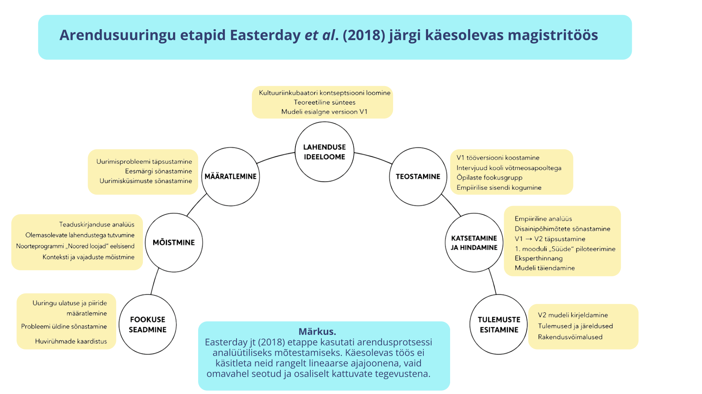

TARTU ÜLIKOOL | SOTSIAALTEADUSTE VALDKOND | HARIDUSTEADUSTE INSTITUUT | HARIDUSINNOVATSIOONI ÕPPEKAVA
Kultuuriinkubaatori mudeli arendamine õppija agentsuse ja loovuse toetamiseks formaalhariduses
Meelis Külaotsa magistritöö
Juhendajad: Kristina Kuznetsova-Bogdanovits, Astrid Külaots
Tartu Ülikool, 2026
Kultuuriinkubaator on formaalhariduses rakendatav mudel, mis seob õppija isikliku huvi, loova katsetamise, koostöise probleemilahenduse ja praktilise väljundi.
Töö rakendusnimetus koolikontekstis on Loomelabor.
Teoreetiline raamistik ja uurimisprobleem
ÕPPIJA AGENTSUS
Rõhutab õppija aktiivset rolli, vastutust ja mõju oma õpiteekonnale.
(Bandura, 2001; Leijen et al., 2020; Schunk, 2012)
LOOV JA KATSETUSPÕHINE ÕPPIMINE
Toetab ideede loomist, katsetamist ja vigadest õppimist.
(Brown, 2008; Kapur, 2008)
PROJEKTÕPE JA KOGUKONDLIK MÕÕDE
Seob õppimise päriselu probleemide ja praktilise väljundiga.
(City of Toronto, 2022; ENCC, 2025; Larmer et al., 2015; Thomas, 2000)
SOTSIAAL-EMOTSIONAALNE RAAMISTIK JA KOOSTÖÖKULTUUR
Võimaldavad õppijal tegutseda koos teistega, võtta vastutust ja liikuda individuaalsest huvist ühise tegutsemiseni.
(CASEL, 2020; Edmondson & Lei, 2014)
Uurimisprobleem
Formaalhariduses puuduvad terviklikud, teoreetiliselt põhjendatud ja praktiliselt rakendatavad mudelid, mis toetaksid süsteemselt õppija agentsuse, loovuse ja tähendusliku õppimise arengut.
Eesmärk ja uurimisküsimused
Eesmärk
Arendada kultuuriinkubaatori mudelit, mis toetab formaalhariduses õppija agentsuse ja loovuse arengut.
Uurimisküsimused
- Kuidas mõtestavad osalejad kultuuriinkubaatori tähendust koolikeskkonnas?
- Millised tähelepanekud ja ettepanekud ilmnesid kultuuriinkubaatori mudeli edasiarendamiseks?
- Millised tegurid mõjutavad kultuuriinkubaatori rakendamist formaalhariduses?
Metoodika

Uuringu sisend
Kontekst
Elva Gümnaasiumi kultuurisuund
Põhivalim
- – võtmeisikud n = 3
- direktor, huvijuht, kultuurisuuna õpetaja
- – õpilaste fookusgrupp n = 9
Arendussisend
- – uurijapäevik
- – piloteerimise tagasiside
- – eksperthinnang
- – „Noored Loojad“ eelsisend
Andmeanalüüs
Temaatiline analüüs (Braun & Clarke, 2006)
Analüüs aitas tuvastada korduvad mustrid ja siduda need kultuuriinkubaatori mudeli arendamisega.
1
Andmetega tutvumine
2
Induktiivne kodeerimine
3
Teemade kujundamine
4
Tõlgendamine ja mudeli täpsustamine
Intervjuude, fookusgrupi, piloteerimise ja eksperthinnangu põhjal täpsustusid mudeli disainipõhimõtted, tööriistad, ülesehitus ja rakendustingimused.
Disainipõhimõtted
Temaatilise analüüsi põhjal koondusid mudeli peamiseks tulemuseks viis põhimõtet, mis suunavad Loomelabori rakendamist koolikeskkonnas.
Energiatundlik
ajakasutus
süvenemine ja paindlikkus
Agentsust toetav
mentorlus
tugi ilma kontrollita
Sotsiaalne
disain
koostöö ja tähendus
Barjäärivaba
protsess
arusaadav ja ligipääsetav
Modulaarne
arhitektuur
kohandatav eri vormides
Loomelabor: kuue-etapiline teekond

Järeldused ja edasised sammud
Järeldused
- Kultuuriinkubaatori mudel pakub formaalharidusse tervikliku ja juhendatud õpiteekonna, mis seob õppija huvi, loovuse, koostöö ja praktilise tegutsemise.
- Osalejate vaates seisneb mudeli tähendus liikumises õppija isiklikust huvist päriselulise väljundi ja mõtestatud õppimiseni.
- Õppija agentsus ei kujune pelgalt valikuvabaduse kaudu, vaid vajab selget, toetatud ja katsetamist võimaldavat õppeprotsessi.
- Mudeli rakendatavus sõltub paindlikust ajakasutusest, juhendaja rollist, protsessi arusaadavusest ja koolikontekstiga kohandatavusest.
Edasised sammud
- Mudeli terviklik piloteerimine koolikontekstis
- Rakendamine erinevates koolides ja õppevormides
- Pikaajalisema mõju hindamine õppija agentsuse, loovuse ja koostööoskuste arengule
Kasutatud kirjandus
Bandura, A. (2001). Social cognitive theory: An agentic perspective. Annual Review of Psychology, 52(1), 1-26.
Braun, V., & Clarke, V. (2006). Using thematic analysis in psychology. Qualitative Research in Psychology, 3(2), 77-101.
Brown, T. (2008). Design thinking. Harvard Business Review, 86(6), 84-92.
Collaborative for Academic, Social, and Emotional Learning. (2020). Core SEL competencies.
Easterday, M. W., Rees Lewis, D. G., & Gerber, E. M. (2018). The logic of design research. Learning: Research and Practice, 4(2), 131-160.
Edmondson, A. C., & Lei, Z. (2014). Psychological safety: The history, renaissance, and future of an emerging construct. Annual Review of Organizational Psychology and Organizational Behavior, 1(1), 23-43.
Kapur, M. (2008). Productive failure. Cognition and Instruction, 26(3), 379-424.
Kolb, D. A. (1984). Experiential learning: Experience as the source of learning and development. Prentice-Hall.
Larmer, J., Mergendoller, J., & Boss, S. (2015). Setting the standard for project based learning: A proven approach to rigorous classroom instruction. ASCD.
Ryan, R. M., & Deci, E. L. (2000). Self-determination theory and the facilitation of intrinsic motivation, social development, and well-being. American Psychologist, 55(1), 68-78.
Schunk, D. H. (2012). Learning theories: An educational perspective (6th ed.). Pearson.
Thomas, J. W. (2000). A review of research on project-based learning. Autodesk Foundation.
AITÄH!
Küsimused ja arutelu.